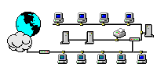

Zum vorhergehenden Abschnitt Zum vorhergehenden Abschnitt |
 Zum Inhaltsverzeichnis Zum Inhaltsverzeichnis |
Zum nächsten Abschnitt |
|  | Internet-TechnologieProf. Jürgen Plate |
Der Server (bzw. das Server-Programm) stellt also einen Dienst zur Verfügung, der vom Client angefordert werden kann. Client und Server unterhalten sich dabei in einer speziellen Sprache - dem entsprechenden Dienstprotokoll. So gibt es ein Protokoll zwischen dem Mail-Server und dem Mail-Client (z.B. SMTP, IMAP oder POP3), eines für den Dateiaustausch zwischen FTP-Client und FFP-Server, ein weiteres für WWW u.s.w.
$ ping www.e-technik.fh-muenchen.de PING www.e-technik.fh-muenchen.de (129.187.206.140): 56 data bytes 64 bytes from 129.187.206.140: icmp_seq=0 ttl=242 time=48.9 ms 64 bytes from 129.187.206.140: icmp_seq=1 ttl=242 time=41.9 ms 64 bytes from 129.187.206.140: icmp_seq=2 ttl=242 time=41.3 ms 64 bytes from 129.187.206.140: icmp_seq=3 ttl=242 time=39.9 ms 64 bytes from 129.187.206.140: icmp_seq=4 ttl=242 time=44.9 ms 64 bytes from 129.187.206.140: icmp_seq=5 ttl=242 time=42.9 ms 64 bytes from 129.187.206.140: icmp_seq=6 ttl=242 time=45.4 ms 64 bytes from 129.187.206.140: icmp_seq=7 ttl=242 time=40.5 ms 64 bytes from 129.187.206.140: icmp_seq=8 ttl=242 time=41.4 ms 64 bytes from 129.187.206.140: icmp_seq=9 ttl=242 time=42.3 ms --- www.e-technik.fh-muenchen.de ping statistics --- 10 packets transmitted, 10 packets received, 0% packet loss round-trip min/avg/max = 39.9/42.9/48.9 ms
arp [-v] [-t hwtype] -a [hostname] arp [-v] [-t hwtype] -s hostname hwaddrAlle hostname-Argumente können als symbolische Hostnamen oder als IP-Adressen angegeben werden.
Der erste Aufruf gibt den ARP-Eintrag für die angegebene IP-Adresse bzw. Hostnamen aus. Fehlt hostname, werden Informationen über alle bekannten Hosts ausgegeben. Zum Beispiel ergibt die Ausgabe von arp auf www.netzmafia.de etwa folgendes:
arp Address HWtype HWaddress Flags Mask Iface 129.187.206.254 ether 00:04:DE:FE:78:00 C eth0 ns.e-technik.fh-muenche ether 00:07:E9:24:EC:15 C eth0 proxy1.e-technik.fh-mue ether 00:07:E9:24:EC:15 C eth0 web1.e-technik.fh-muenc ether 00:07:E9:24:EB:F5 C eth0Die Ausgabe kann mit der -t-Option auch auf bestimmte Hardwaretypen beschränkt werden. Als Argument geben Sie ether, ax25 oder pronet an, was für 10 Mbps Ethernet, AMPR AX.25 und IEEE 802.5 Token Ring steht.
Die Option -s dient dazu, die Hardwareadresse von hostname manuell in die ARP-Tabelle einzutragen. Das Argument hwaddr spezifiziert die Hardwareadresse, die normalerweise als Ethernet-Adresse aus sechs Byte in hexadezimaler Notation angegeben ist. Sie können solche Adressen auch bei anderen Hardwaretypen verwenden, wenn Sie zusätzlich die Option -t angeben. Die Festverdrahtung von Hardwareadressen im ARP-Cache ist eine drastische Maßnahme, um Maschinen aus Ihrem Ethernet daran zu hindern, sich als jemand anderes auszugeben.
Wenn Sie arp mit der Option -d aufrufen, entfernt es alle Einträge für einen bestimmten Host. Es kann dazu benutzt werden, das Interface anzuweisen, eine bereits angeforderte Hardwareadresse einer IP-Adresse nochmals anzufordern, und ist besonders dann nützlich, wenn ein fehlerhaft konfiguriertes System falsche ARP-Informationen sendet (natürlich muß zuerst das fehlerhafte System erneut konfiguriert werden).
Mit der Option "-a" wird der aktuelle Inhalt der Tabelle ausgegeben, z.B.:
arp -a Net to Media Table Device IP Address ------- Mask Flags Phys Addr ------ --------------------------- --------------- ----- ----------------- le0 brokrz.lrz-muenchen.de 255.255.255.255 00:00:a2:0f:76:97 le0 infoserv.rz.fh-muenchen.de 255.255.255.255 00:e0:29:06:18:d3 le0 flynt.rz.fh-muenchen.de 255.255.255.255 00:e0:29:08:49:f1 le0 kobra.rz.fh-muenchen.de 255.255.255.255 00:08:c7:a9:6c:cc le0 netmon.rz.fh-muenchen.de 255.255.255.255 00:e0:29:0e:83:92 le0 linux4.rz.fh-muenchen.de 255.255.255.255 00:00:c0:93:19:d3 le0 linux5.rz.fh-muenchen.de 255.255.255.255 00:00:c0:37:19:d3 le0 door2.rz.fh-muenchen.de 255.255.255.255 00:00:c0:3f:fb:a7 le0 wapserv 255.255.255.255 SP 08:00:20:23:02:88 le0 sun10.rz.fh-muenchen.de 255.255.255.255 08:00:20:86:ce:5e le0 kiosk1.rz.fh-muenchen.de 255.255.255.255 00:00:c0:60:af:d7 le0 satellit.rz.fh-muenchen.de 255.255.255.255 08:00:20:71:77:b4 le0 kaputt.rz.fh-muenchen.de 255.255.255.255 00:50:56:82:f0:f0
netstat -nr Kernel IP Routentabelle Ziel Router Genmask Flags MSS Fenster irtt Iface 129.187.206.0 0.0.0.0 255.255.255.0 U 0 0 0 eth0 192.168.1.0 0.0.0.0 255.255.255.0 U 0 0 0 eth1 0.0.0.0 129.187.206.254 0.0.0.0 UG 0 0 0 eth0
Die Option -n sorgt zusätzlich dafür, daß netstat die Adressen statt als symbolische Host- und Netzwerknamen direkt in dezimaler Notation ausgibt. Das ist dann nützlich, wenn Sie verhindern wollen, daß langwierige Adreßauflösungsanfragen über das Netzwerk ausgeführt werden, zum Beispiel beim DNS- oder NIS-Server. Die zweite Spalte der netstat-Ausgabe zeigt jeweils das Ziel der Route an. Die zweite Spalte gibt das Gateway an, auf das der Routing-Eintrag zeigt. Wird kein Gateway verwendet, wird statt dessen ein Sternchen ausgegeben. Die dritte Spalte gibt Auskunft über die "Allgemeinheit" der Route, d.h. deren Netzmaske. Wenn der Kernel eine IP-Adresse erhält, für die er eine angemessene Route finden soll, dann durchsucht er alle Einträge in der Routing-Tabelle und führt eine bitweise UND-Verknüpfung mit der Adresse und der Genmask durch, bevor er sie mit dem Ziel der Route vergleicht. Die vierte Spalte zeigt verschiedene Flags, die die Route näher charakterisieren.
| G | Die Route geht durch ein Gateway. |
| U | Das zu verwendende Interface ist aktiv. |
| H | Die Route zeigt auf einen einzelnen Host, wie das z.B. beim Loopback-Eintrag 127.0.0.1 der Fall ist. |
| D | Diese Route wurde dynamisch erzeugt. Dieses Flag ist gesetzt, wenn der Tabelleneintrag von einem Routing-Dämon wie gated oder durch eine ICMP-Redirect-Nachricht generiert wurde. |
| M | Dieses Flag ist gesetzt, wenn der entsprechende Tabelleneintrag durch eine ICMP-Redirect-Nachricht verändert wurde. Der Tabelleneintrag wurde durch einen ICMP-Redirect modifiziert. |
| ! | Alle Datagramme werden verworfen. |
Die nächsten drei Spalten geben Auskunft über die maximale Segmentgröße (MSS, Maximum Segment Size), das Fenster sowie über die Anfangsumlaufzeit (irtt, initial round trip time), die auf die über diese Route etablierten TCP-Verbindungen anzuwenden sind. Die MSS bezeichnet den Umfang des größten IP-Pakets, das der Kernel über diese Route verschickt. Mit dem Fenster ist die maximale Datenmenge gemeint, die von einem Remote-Host auf einmal empfangen werden kann. Das TCP-Protokoll stellt sicher, daß die Daten zwischen den Hosts zuverlässig übertragen werden. Falls Datenpakete unterwegs verlorengehen, wird die übertragung dieser fehlenden Pakete automatisch wiederholt. Das TCP-Protokoll ermittelt am Anfang einer übertragung, wie lange das gesendete Datenpaket zum Remote-Host braucht, und ermittelt aus der Zeit bis zur Rückantwort einen Wert, der für die weitere Datenübertragung als Maß dient, ob ein IP-Paket ggf. wiederholt werden muß. Diese Zeit wird als round trip time bezeichnet. Der Vorgabewert wird vom TCP-Protokoll beim erstmaligen Verbindungsaufbau benutzt. Nullwerte in diesen Spalten bedeuten, daß Standardwerte benutzt werden. Schließlich gibt das letzte Feld die Netzwerkschnittstelle an, die die Route benutzt.
netstat -i Kernel Schnittstellentabelle Iface MTU Met RX-OK RX-ERR RX-DRP RX-OVR TX-OK TX-ERR TX-DRP TX-OVR Flg eth0 1500 0 31746 0 0 0 14928 0 0 0 BMRU eth0: 1500 0 - keine Statistiken verfügbar - BMRU eth0: 1500 0 - keine Statistiken verfügbar - BMRU eth0: 1500 0 - keine Statistiken verfügbar - BMRU eth0: 1500 0 - keine Statistiken verfügbar - BMRU eth0: 1500 0 - keine Statistiken verfügbar - BMRU eth0: 1500 0 - keine Statistiken verfügbar - BMRU eth0: 1500 0 - keine Statistiken verfügbar - BMRU eth0: 1500 0 - keine Statistiken verfügbar - BMRU eth0: 1500 0 - keine Statistiken verfügbar - BMRU eth1 1500 0 0 0 0 0 8691 0 0 0 BMRU lo 16436 0 966 0 0 0 966 0 0 0 LRUDie Spalten MTU und Met geben die aktuelle MTU und Metrik des Interface an. Die mit RX bzw. TX überschriebenen Spalten geben an, wie viele Pakete fehlerfrei empfangen bzw. gesendet wurden (RX-OK/TX-OK), wie viele beschädigt waren (RX-ERR/TX-ERR), wie viele verworfen werden mußten (RX-DRP/TX-DRP) und wie viele aufgrund eines Overruns verlorengingen (RX-OVR/TX-OVR). Die letzte Spalte zeigt wieder die Flags an, die für die Schnittstelle gesetzt sind. Das sind einbuchstabige Versionen der langen Flag-Namen, die ifconfig ausgibt:
| B | Eine Broadcast-Adresse wurde gesetzt. |
| L | Die Schnittstelle ist ein Loopback-Device. |
| M | Alle Pakete werden empfangen (promiskuöser Modus). |
| O | ARP ist an dieser Schnittstelle abgeschaltet. |
| P | Es handelt sich um eine Punkt-zu-Punkt-Verbindung. |
| R | Die Schnittstelle ist "running". |
| U | Die Schnittstelle ist aktiv ("up"). |
netstat -ta Aktive Internetverbindungen (Server und stehende Verbindungen) Proto Recv-Q Send-Q Local Address Foreign Address State tcp 0 0 *:imaps *:* LISTEN tcp 0 0 *:mysql *:* LISTEN tcp 0 0 vweb1.ee.fhm.edu:7788 *:* LISTEN tcp 0 0 *:pop3 *:* LISTEN tcp 0 0 *:imap *:* LISTEN tcp 0 0 *:sunrpc *:* LISTEN tcp 0 0 *:www-http *:* LISTEN tcp 0 0 *:bpcd *:* LISTEN tcp 0 0 *:vopied *:* LISTEN tcp 0 0 *:smtp *:* LISTEN tcp 0 0 *:bpjava-msvc *:* LISTEN tcp 0 0 ehg.e-technik.fh-m:smtp mailrelay2.rz.fh-:48063 VERBUNDEN tcp 0 0 *:ssh *:* LISTEN tcp 0 1208 vweb.e-technik.fh-m:ssh diale071.ppp.lrz-:58198 VERBUNDEN tcp 0 0 vweb.e-technik.fh-m:ssh menetekel.e-techn:32862 VERBUNDENMan sieht, daß die meisten Server einfach auf eine eingehende Verbindung warten, da sie sich im Zustand LISTEN befinden.
Wenn Sie netstat nur mit der Option -a aufrufen, zeigt es eine Liste aller Sockets aus allen Familien:
Active Internet connections (including servers) Proto Recv-Q Send-Q Local Address Foreign Address (State) User tcp 0 0 *:netbios-ssn *:* LISTEN root tcp 0 0 *:nntp *:* LISTEN root tcp 0 0 *:auth *:* LISTEN root tcp 0 0 *:sunrpc *:* LISTEN root tcp 0 0 *:pop3 *:* LISTEN root tcp 0 0 *:www *:* LISTEN root tcp 0 0 *:finger *:* LISTEN root tcp 0 0 *:midinet *:* LISTEN root tcp 0 0 *:http-rman *:* LISTEN root tcp 0 0 *:btx *:* LISTEN root tcp 0 0 *:smtp *:* LISTEN root tcp 0 0 *:telnet *:* LISTEN root tcp 0 0 *:ftp *:* LISTEN root tcp 0 0 *:netstat *:* LISTEN root tcp 0 0 *:systat *:* LISTEN root tcp 0 0 *:printer *:* LISTEN root tcp 0 0 *:shell *:* LISTEN root tcp 0 0 *:login *:* LISTEN root tcp 0 0 *:exec *:* LISTEN root udp 0 0 *:rplay *:* udp 0 0 *:netbios-ns *:* udp 0 0 *:sunrpc *:* udp 0 0 *:ntalk *:* udp 0 0 *:talk *:* udp 0 0 *:syslog *:* raw 0 0 *:1 *:* Active UNIX domain sockets Proto RefCnt Flags Type State Inode Path unix 1 [ ACC ] SOCK_STREAM LISTENING 417 /dev/log unix 2 [ ] SOCK_STREAM CONNECTED 440 unix 2 [ ] SOCK_STREAM UNCONNECTED 441 /dev/log unix 2 [ ] SOCK_STREAM CONNECTED 499 unix 2 [ ] SOCK_STREAM UNCONNECTED 500 /dev/log unix 2 [ ] SOCK_STREAM CONNECTED 517 unix 2 [ ] SOCK_STREAM UNCONNECTED 518 /dev/logDie erste Spalte enthält das Transportprotokoll. Die zweite und dritte Spalte sagen etwas über die Anzahl der Bytes in der Empfangs- bzw. Sende-Warteschlange aus. Die nächsten beiden Spalten geben lokale und ferne Adressen einer Verbindung an. Diese Adressen bestehen aus der Internet-Adresse und der Portnummer der Kommunikationspartner. Ist der Rechner in der /etc/hosts bzw. der Dienst in der /etc/services eingetragen, so werden statt der Adressen Rechnername bzw. der Name des Services aus gegeben. Dies läßt sich durch den Aufruf von netstat -in verhindern. Handelt es sich 4611 um einen Eintrag für einen aktiven Server, so wird die lokale Adresse in der Form "*.<portnummer>" und ferne Adressen in der Form "*.*" angegeben. Diese Art der Ausgabe zeigt an, daß der entsprechende Dienst bereit ist. Bei TCP-Diensten zeigt zusätzlich die letzte Spalte an, daß der Server auf LISTEN aesetzt ist. Kommt für einen speziellen Dienst keine Verbindung zustande, obwohl andere Programme (z.B. ping) funktionieren. so kann man mittels netstat -a auf dem Zielsystem überprüfen, ob der Server dort aktiv ist. Nur dann kann eine entsprechende Verbindung überhaupt aufgebaut werden.
Zähler Gateway-Name Gateway-IP-Nummer "round-trip"-Zeit (3 Werte)Traceroute sendet jeweils drei Datenpakete. Wenn auf ein Paket keine Antwort erfolgt, wird ein Sternchen (*) ausgegeben. Ist ein Gateway nicht erreichbar, wird statt einer Zeitangabe '!N' (network unreachable) oder '!H' (host unreachable) ausgegeben. Man kann so feststellen, wo eine Verbindung unterbrochen ist, und auch, welchen Weg die Daten nehmen - wo also der Zielrechner in etwa steht. Bei grafischen Benutzerschnittstellen erfolgt die Parameterangabe über Dialogfelder und nicht in der Kommandozeile.
$ traceroute www.linux.org traceroute to www.linux.org (198.182.196.56), 30 hops max, 40 byte packets 1 space-gw2m (194.97.64.8) 2.758 ms 3.637 ms 2.491 ms 2 Cisco-M-IV.Space.Net (195.30.0.123) 6.413 ms 4.118 ms 4.107 ms 3 Cisco-M-Fe0-0.Space.Net (195.30.0.126) 4.826 ms 4.508 ms 5.53 ms 4 Cisco-ECRC-H1-0.Space.Net (193.149.44.2) 5.977 ms 6.273 ms 20.832 ms 5 munich-ebs2-s0-0-0.ebone.net (192.121.158.189) 14.415 ms 17.018 ms 8.575 ms 6 newyork-ebs1-s5-0-0.ebone.net (195.158.224.21) 137.35 ms 139.103 ms 138.14 ms 7 serial0-0-1.br1.nyc4.ALTER.NET (137.39.23.81) 137.132 ms 141.742 ms 141.207 ms 8 134.ATM2-0.XR1.NYC4.ALTER.NET (146.188.177.178) 135.375 ms 128.12 ms 165.913 ms 9 189.ATM3-0.TR1.EWR1.ALTER.NET (146.188.179.54) 141.83 ms 144.798 ms 362.469 ms 10 105.ATM4-0.TR1.DCA1.ALTER.NET (146.188.136.185) 145.321 ms 147.889 ms 152.43 ms 11 299.ATM6-0.XR1.TCO1.ALTER.NET (146.188.161.169) 354.577 ms 133.535 ms 348.647 ms 12 193.ATM8-0-0.GW2.TCO1.ALTER.NET (146.188.160.49) 152.444 ms 369.313 ms 150.106 ms 13 uu-peer.oc12-core.ai.net (205.134.160.2) 365.008 ms 509.81 ms 144.898 ms 14 border-ai.invlogic.com (205.134.175.254) 270.065 ms 341.586 ms 153.441 ms 15 router.invlogic.com (198.182.196.1) 356.496 ms 506.371 ms 532.983 ms 16 www.linux.org (198.182.196.56) 584.957 ms 300.612 ms 380.004 ms
Beispiel: Webserver abfragen:
(Benutzereingaben fett)
echo -e 'GET / HTTP/1.0\n\n' | netcat -w 10 www.ee.fhm.edu 80 HTTP/1.1 200 OK Date: Wed, 15 Sep 2004 07:07:35 GMT Server: Apache/1.3.28 (Linux/SuSE) mod_ssl/2.8.15 OpenSSL/0.9.7b PHP/4.3.3 X-Powered-By: PHP/4.3.3 Connection: close Content-Type: text/html <!DOCTYPE HTML PUBLIC "-//W3C//DTD HTML 4.0 Transitional//EN"> <html> ...netcat beendet sich erst, wenn die Verbindung abbricht. Der Parameter -w 10 bewirkt, daß spätestens 10 Sekunden nach dem Ende der Eingabe das Programm abbricht.
Mit netcat und inetd kann man lokale Ports an andere Hosts umleiten. Die folgende Zeile in /etc/inetd.conf auf sleepy stellt den Port 80 von grumpy lokal zur Verfügung:
80 stream tcp nowait nobody /usr/bin/nc /usr/bin/nc -w 3 grumpy 80beziehungsweise mit dem tcpd:
80 stream tcp nowait nobody /usr/sbin/tcpd /usr/bin/nc -w 3 grumpy 80
PROGRAM | nc -l -p PORT -w TIMEOUToder
nc -l -p PORT -w TIMEOUT | PROGRAM
nc -l -p PORT -e PROGRAMLeider kann netcat keine Parameter an PROGRAM übergeben, daher wird man hier häufig ein Shellscript angeben.
Da netcat beim Ende der Verbindung beendet wird, kann es nur eine einzige Verbindung bedienen.
$ nc -vlp 4711 | tar xvpf - listening on [any] 4711 ...Auf der sendenden Seite ruft man eine Shellfunktion auf, welche die übergebenen Dateien und Verzeichnisse zusammentart und an den Port 4711 des empfangenden Rechners sendet:
$ ( cd QUELLDIR ; tar cvpf - * | nc -w 1 ZIELHOST 4711 )
Auf HTTP und FTP aufsetzend kann man beispielsweise ganze Archive oder Homepages spiegeln. Auch mit einer schlechten Anbindung ans Internet eignet sich das Programm hervorragend zum Download im Hintergrund: Nicht nur ein "Anknüpfen" an eine abgebrochene übertragung, sondern auch ein Update ist möglich -- Wget kann aufgrund von Timestamps erkennen, ob es eine aktuelle Version einer Datei schon heruntergeladen hat. Zu finden ist es unter http://www.gnu.org/software/wget/wget.html.
Der Standardaufruf von Wget ist wget [options] URL. Wget ist ein GNU-Tool, d. h. alle Parameter haben eine lange (wget --version) und eine kurze Form (wget -V). Mit wget -h (oder --help) bekommen Sie eine ausführliche Kommandoübersicht. Ein erstes Beispiel:
wget http://www.netzmafia.de/
--16:15:16-- http://www.netzmafia.de:80/
=> `index.html'
Connecting to www.netzmafia.de:80... connected!
HTTP request sent, awaiting response... 200 OK
Length: 8,208 [text/html]
0K -> ........ [100%]
12:15:18 (9.01 KB/s) - `index.html' saved [8208/8208]
Auf den lokalen Computer wird die Datei index.html heruntergeladen.
Bilder und Unterverzeichnisse sind nicht mit eingeschlossen. Möchten Sie eine
Stufe tiefer gehen, probieren Sie die Option -r (für
--recursive). Jetzt folgt Wget den Links und der
Verzeichnisstruktur der zu spiegelnden Seiten. Wichtig ist in diesem
Zusammenhang der Parameter -l num (--level=num), bei dem
num die Anzahl der Level festlegt.Ist ein Download unterbrochen worden, kann mit Hilfe des Parameters -c (--continue) der Ladevorgang wieder aufgenommen werden. Um bestimmte Seiten in regelmäßigen Abständen immer wieder zu sichern, gibt es die Option -N (--timestamping): Es wird bei jeder Datei der Zeitstempel mit dem der lokalen Datei verglichen und nur geladen, wenn die ferne Datei neuer ist als die lokale.
Mit dem Aufruf wget -nd (--no-directories) wird die Verzeichnisstruktur der fernen Site nicht übernommen. Vorsicht ist hier jedoch geboten bei Dateien mit gleichen Namen: sie werden einfach überschrieben. Umgekehrt wird mit der Option -x (--force-directories) die Verzeichnisstruktur der fernen Site auf jeden Fall komplett übernommen. Die Option -nH (--no-host-directories) übernimmt die Verzeichnisstruktur vom Server, aber der Hostname wird nicht mit berücksichtigt, es wird ins aktuelle Verzeichnis gespiegelt.
Wildcards sind unter Wget nicht möglich. Die Option -A "liste" (--accept) schafft Abhilfe. In der "liste" definieren Sie die zu ladenden Dateitypen, zum Beispiel:
wget -r -l1 -A jpg,gif,png http://www.netzmafia.deDanach finden sich im Verzeichnis nur noch diese Bilddateien und eine Datei index.html, die Wget braucht, um die Bilder zu finden. Hinter den Kulissen saugt Wget eigentlich alle Dateien, entfernt dann aber nicht benötigte.
... 13:03:19 (8.73 KB/s) - `bla.html' saved [8584/8584] Removing bla.html since it should be rejected. ...Mit -R liste (--reject) können Sie Dateierweiterungen ausschlie^ßen. Der Aufruf wget -r -l1 -R doc,avi,mpg,mp3 http://www.netzmafia.de würde die angegebenen Dateitypen aussparen. Ein Download-Limit können Sie darüber hinaus mit dem Parameter -Q (--quota) setzen. Die Begrenzung bezieht sich auf die Gesamtmenge der Daten und wird standardmä^ßig in Bytes angegeben. Eine Begrenzung in Kilobytes oder Megabytes ist auch möglich - dazu wird k oder m an die Zahl angehängt.
Fast alle Parameter, die Sie wget beim Start mitgegeben haben, können Sie in eine Konfigurationsdatei mit dem Namen .wgetrc im Heimatverzeichnis eintragen. Zum Beispiel:
tries = 20 reclevel = 8 timestamping = on dirstruct = on
Weitere Informationen liefert die Wget-Beschreibung.
"echo" bezeichnet beispielsweise einen Service, nämlich TCP-Port 7, der ankommende Meldungen schlicht zurückschickt (siehe unten). Das kann man direkt mit telnet ausprobieren:
$ telnet localhost echo
Trying 127.0.0.1...
Connected to localhost.
Escape character is '^]'.
hello world
hello world
^]
telnet> quit
Connection closed.
Auch eine Webserverabfrage mach kein Problem. Nach Aufbau der Telnet-Verbindung gibt
man den gewünschten Dateipfad (genauer, ein Kommando des HTTP-Protokolls, im
Beispiel unten "GET / HTTP/1.0") und anschliessend eine Leerzeile ein, z.B.:
telnet www.netzmafia.de 80 Trying 129.187.206.160... Connected to www.netzmafia.de. Escape character is '^]'. GET / HTTP/1.0 HTTP/1.1 200 OK Date: Wed, 15 Sep 2004 07:46:45 GMT Server: Apache/1.3.26 (Unix) Debian GNU/Linux mod_ssl/2.8.9 OpenSSL/0.9.6c Last-Modified: Wed, 12 May 2004 13:47:57 GMT ETag: "1f7078-797-40a22b0d" Accept-Ranges: bytes Content-Length: 1943 Connection: close Content-Type: text/html; charset=iso-8859-1 <html> ... </html> Connection closed by foreign host.
telnet 129.187.206.160 19 Trying 129.187.206.160... Connected to 129.187.206.160. Escape character is '^]'. !"#$%&'()*+,-./0123456789:;<=>?@ABCDEFGHIJKLMNOPQRSTUVWXYZ[\]^_`abcdefg !"#$%&'()*+,-./0123456789:;<=>?@ABCDEFGHIJKLMNOPQRSTUVWXYZ[\]^_`abcdefgh "#$%&'()*+,-./0123456789:;<=>?@ABCDEFGHIJKLMNOPQRSTUVWXYZ[\]^_`abcdefghi #$%&'()*+,-./0123456789:;<=>?@ABCDEFGHIJKLMNOPQRSTUVWXYZ[\]^_`abcdefghij $%&'()*+,-./0123456789:;<=>?@ABCDEFGHIJKLMNOPQRSTUVWXYZ[\]^_`abcdefghijk %&'()*+,-./0123456789:;<=>?@ABCDEFGHIJKLMNOPQRSTUVWXYZ[\]^_`abcdefghijkl &'()*+,-./0123456789:;<=>?@ABCDEFGHIJKLMNOPQRSTUVWXYZ[\]^_`abcdefghijklm '()*+,-./0123456789:;<=>?@ABCDEFGHIJKLMNOPQRSTUVWXYZ[\]^_`abcdefghijklmn ()*+,-./0123456789:;<=>?@ABCDEFGHIJKLMNOPQRSTUVWXYZ[\]^_`abcdefghijklmno )*+,-./0123456789:;<=>?@ABCDEFGHIJKLMNOPQRSTUVWXYZ[\]^_`abcdefghijklmnop *+,-./0123456789:;<=>?@ABCDEFGHIJKLMNOPQRSTUVWXYZ[\]^_`abcdefghijklmnopq +,-./0123456789:;<=>?@ABCDEFGHIJKLMNOPQRSTUVWXYZ[\]^_`abcdefghijklmnopqr ,-./012 ^] telnet> quit Connection closed.Das chargen-Protokoll ist somit eine einfache Möglichkeit, Verbindungen und gegebenenfalls Terminal-Einstellungen zu überprüfen. Der Datenfluß wird bei chargen-TCP-Verbindungen durch den normalen TCP-Datenfluß-Kontrollmechanismus gesteuert, so daß Pakete nicht schneller verschickt als empfangen werden können. Dasselbe gilt für UDP, Datagramme werden nur verschickt, wenn die Empfangsbestätigung des letzten Datagramms eingetroffen ist.
telnet 129.187.206.160 7 Trying 129.187.206.160... Connected to 129.187.206.160. Escape character is '^]'. Hallo Hallo ^] telnet> quit Connection closed.
Mit dem echo-Protokoll lassen sich auf sehr einfache Weise speziell Terminaleinstellungen testen, z.B. kann man so einen Überblick über die verwendeten Codetables der eingesetzten Terminals erlangen. Dieser Dienst erzeugt ebenfalls wenig Datenverkehr, so daß sich die Verbindung auch durch langsame Leitungen sehr gut testen läßt.
telnet 129.187.206.160 13 Trying 129.187.206.160... Connected to 129.187.206.160. Escape character is '^]'. Wed Sep 15 15:03:23 2004 Connection closed by foreign host.Das daytime-Protokoll ist somit eine einfache Möglichkeit, Verbindungen und die Systemzeit vernetzter Rechner zu überprüfen. Beim Zeitabgleich ist die Zeit, die die Nachricht im Netz verbringt, zu berücksichtigen.
| Zum vorhergehenden Abschnitt |
Zum Inhaltsverzeichnis |
Zum nächsten Abschnitt |